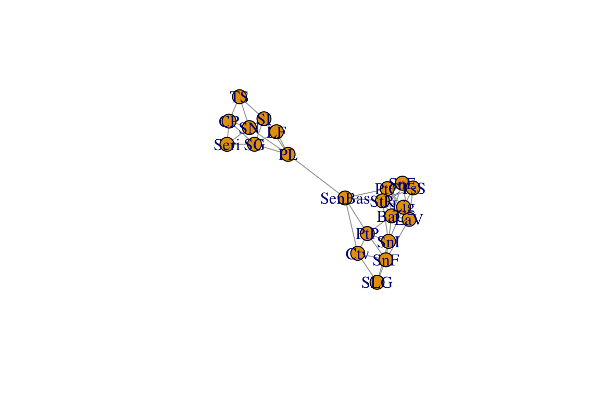
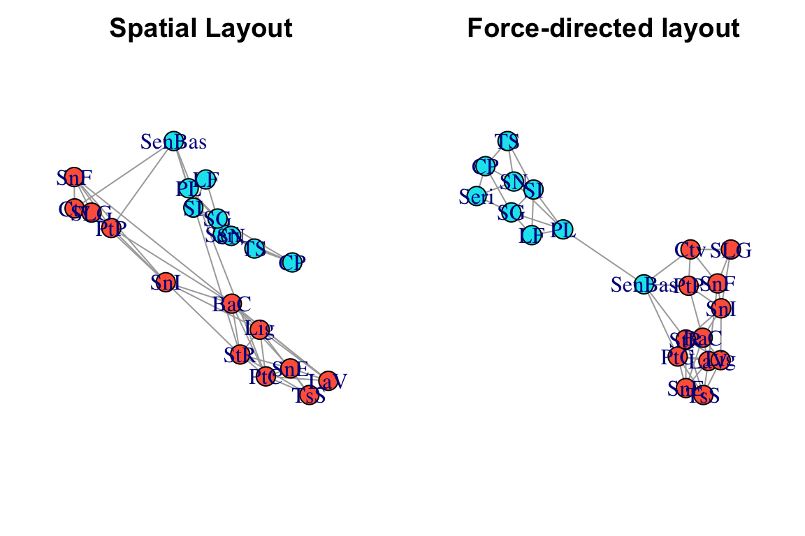

4.3 Intro to Spatial Networks
Dai Shizuka
7/10/2018
Spatial networks
With spatial networks, the nodes represent spatial locations and the edges represent connections between those locations, e.g., habitat connectivity (‘landscape connectivity networks’: Urban & Keitt 2001, Urban et al. 2009), movements of individuals (‘movement networks’: Jacoby & Freeman 2016), genetic covariance among populations (‘population graphs’: Dyer & Nason 2004, Dyer 2015), migration pathways (‘migratory flow networks’: Taylor & Norris 2010). Such networks of connectivity between populations are important in a variety of fields including conservation biology, population genetics, evolution and metapopulation ecology.
4.3.1 Spatial network of Lophocereus schottii

Lophocereus schottii
To explore this type of data, we will be demonstrating the construction of space-based networks using a dataset on genetic connectivity (‘population graph’) of the cactus Lophocereus schottii from Dyer & Nason (2004). We will be using an R package called ‘popgraph’, written by Rodney Dyer. A nice tutorial is available online (http://dyerlab.github.io/popgraph/), and the codes here are mostly adapted from this site.
First, we will import an adjacency matrix of genetic connectivity among sites in L. schottii (Dyer & Nason 2004). Nason et al. (2002) assayed 29 polymorphic allozyme loci from 948 individual cacti in 21 populations. This data was converted to a 21 x 21 genetic distance matrix. Then the pairs of populations that were (using a method called edge exclusion deviance; see Dyer and Nason 2004 for details). In the resulting network (i.e., ‘population graph’), sites are connected by an edge if they are genetically ‘significantly similar’ (i.e., there is gene flow).
library(igraph)
library(popgraph)
library(ggmap)Let’s read the data and take a look (output not shown here):
lopnet=as.matrix(read.csv("https://dshizuka.github.io/networkanalysis/SampleData/lopho_network.csv", header=T, row.names=1)) #From Dyer et al. 2004
lopnetNow, let’s convert this into a graph object and plot it:
g=graph_from_adjacency_matrix(lopnet, mode="undirected")
plot(g)
Again, in this network, each node represents a population and the edges connect populations that are significantly similar genetically.
4.3.2 Using spatial data to plot networks
Now, let’s now display this network using the actual locations of the nodes. To do this, we will read in a second dataset that includes the latitude/longitude coordinates of each node as well as a “region” variable indicating whether the population is in Sonora or Baja state of Mexico. This data is from Table 1 in Nason et al. (2002).
locations=read.csv("https://dshizuka.github.io/networkanalysis/SampleData/lopho_locations.csv")
head(locations)## Population Region Lat Long
## 1 CP Sonora 27.9461 -110.6594
## 2 TS Sonora 28.4050 -111.3658
## 3 SN Sonora 28.8211 -111.7992
## 4 Seri Sonora 28.8761 -111.9550
## 5 SG Sonora 29.3950 -112.0536
## 6 SI Sonora 29.7539 -112.5050We can use these coordinates to plot the spatial network. We won’t worry about specific projection methods for converting coordinates to 2D. We can do this by creating a 2-column matrix of x- and y-coordinates and using this as the ‘layout’, which we can specify when plotting the network. While we’re at it, we will also color-code the nodes based on region:
#create a two-column matrix of x- and y-coordinates
V(g)$x=locations[match(V(g)$name, locations$Population),"Long"]
V(g)$y=locations[match(V(g)$name, locations$Population),"Lat"]
l=matrix(c(V(g)$x, V(g)$y), ncol=2)
# color-code nodes by region
regions=locations[match(V(g)$name, locations$Population),"Region"]
V(g)$color=c("tomato", "turquoise2")[as.numeric(regions)]Now, let’s compare what the networks look like when using this ‘spatial layout’, compared to a force-directed layout (Fruchterman-Reingold), which is the default layout in igraph.
par(mfrow=c(1,2), mar=c(2,2,2,2))
plot(g, layout=l, main="Spatial Layout")
plot(g, layout=layout_with_fr(g), main="Force-directed layout")